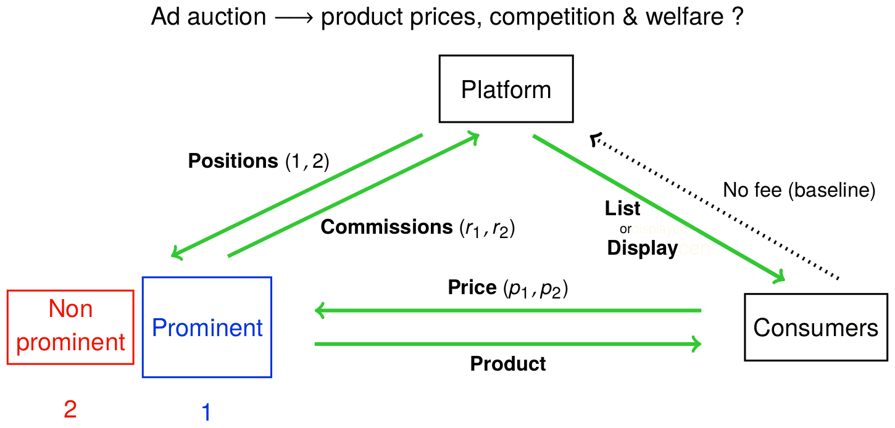

Working Papers
* Sponsored Search: Theory and Evidence on How Platforms Exacerbate Product Market Concentration
Presentations: 2022 - JEI, EARIE, JapMES, CMID-NUS, AusMES, ICT-ZEW, AsMES, ISMS, DIW, Warwick PhD, MWET, TADC, AFES, Humboldt, SMYE, RES, 2021 - Delhi WS, UPF, Stockholm IO Workshop, BSE Jamboree
Abstract
Draft
Appendix
How do sponsored advertisements affect product market concentration, through
their effects on firms' pricing and consumer behaviour? To analyse this,
I develop a theory of digital markets where an intermediary provides a
platform for firms to advertise their product and where consumers need to
engage in costly search if they want to learn about the product characteristics.
First, I show that when prices are observable prior to the costly product
inspection, the less prominent (lower in the search order) firm is forced to
lower its price in order to attract more visitors, thus putting it at a competitive
disadvantage. Second, I augment this model by allowing the intermediary
to determine endogenously, through an auction, the order in which products
are displayed and the advertising commissions to be paid (per-click). I show
that the pass-through from these commissions to product prices is actually
higher for the less prominent firm, thus further putting it at a competitive
disadvantage. In equilibrium, these asymmetries in consumer price elasticity
and commission pass-through lead to lower competition, consumer surplus
and total transactions in the product market. Third, I show that the pay per-
click business model is intermediary-optimal while the pay per-sale and the
consumer subscription fee models improve consumer surplus at the expense of
the intermediary. Fourth, I provide novel empirical evidence that is consistent
with some key predictions of the model. These results contribute to the ongoing
policy discussions on the effect of dominant digital platforms on product market
concentration.

* Sleeping With the Enemy: How Politicians and Interest Groups Adapt their Collaborations in the Face of Reputational Threats
with Miguel Espinosa and Giorgio Zanarone
Presentations (me & co-authors): 2022 - SIOE - U Toronto, Strategy Science - NYU, Indiana U, MIT Sloan, Bocconi
Abstract
How does the reputation of interest groups affect their collaboration with politicians?
We address this question using unique data on the public speeches andlobbying contacts of
U.S. legislators. We find that when external events tarnish a foreign country's reputation,
legislators with prior connections to that country publicly distance themselves from it
through their speeches, while meeting more often with its lobbyists. Our results suggest
that politicians and interest groups navigate crises by strategically decoupling the public
and private dimensions of their collaboration. On the one hand, politicians protect
themselves from reputational spillovers through public distancing. On the other hand,
interest groups increase the assistance they provide to politicians via lobbying in order to
motivate those politicians to continue a private collaboration that is now less appealing
to them.
Work In-Progress
* Demand Distortions, Markups and Firm Growth
with Sampreet Goraya
Abstract
Local demand is an important determinant of firm growth in rural areas. In
this project, we document the role of ethnic networks in segmenting the local
demand and its implication for local firm growth and aggregate misallocation.
We focus our analysis on India, where the caste system plays a significant role
on individuals' economic outcomes. First, we show that demand is segmented
along caste lines. This, in turn, creates markup and productivity dispersion
across firms owned by different castes. To identify this demand segmentation
effect, we use exogenous changes in regional rainfall intensity as an instrument
for local demand shocks. We find that consumers historically classified as
belonging to the Low Caste (LC consumers) experience a positive income shock
due to rainfall and that this translates into higher per-capita consumption for
them. Further, we show that regional increase in the LC consumers' demand
translates into higher output growth and lower markup for the firms owned
by members of the same caste-category, relative to others. Using a quantitative
model, we plan to quantify the significance of demand channel in determining
firm growth and misallocation.
* Sponsored Search: Evidence from Clickstream Data
* The Dynamics of Firm Prominence
Book Chapters
* Current Challenges for Competition in Online Advertising Markets
with Rosa Ferrer and Paul Richter
in Reforms to foster competition in Spain, edited by Juanjo Ganuza and Joaquín López Vallés,
published by The Spanish National Markets and Competition Commission (CNMC)
Abstract (in Spanish)
Draft (in Spanish)
Tanto en EE. UU. como en España, la publicidad online ya supuso en 2021 más del 50 por
100 del gasto total en publicidad. Unido a múltiples retos ya conocidos por los economistas
(barreras de entrada por economías de escala, switching costs, efectos de red), la publicidad
online añade además la personalización de la publicidad y las dificultades para preservar la
privacidad. Veremos que la publicidad online potencialmente puede tanto favorecer como
dificultar la competencia. Repasaremos literatura académica que ofrece claves para identificar
y cuantificar formas en que la publicidad online puede generar barreras a la competencia y
daños a los consumidores.